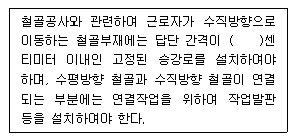
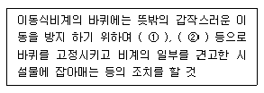
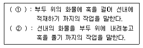

건설안전산업기사 (2005-03-20 기출문제)
1과목: 산업안전관리론
1. 안전동기를 유발시킬 수 있는 방법과 거리가 먼 것은?
- 경쟁과 협동심을 유발시킨다.
- 안전목표를 명확히 설정한다.
- 상・벌을 준다.
- 동기유발의 최소수준을 유지토록 한다.
(정답률: 86%)

2. 다음 중 산소가 결핍되어 있는 장소(8% 이하)에서도 사용할 수 있는 마스크는 어느 것인가?
- 방독 마스크
- 방진 마스크
- 송기 마스크
- 방연 마스크
(정답률: 95%)
3. 위험 예지 훈련 문제해결 4단계 중 문제점 발견 및 중요 문제를 결정하는 단계는 다음 중 어느 것인가?
- 대책수립 단계
- 현상파악 단계
- 본질추구 단계
- 행동목표설정 단계
(정답률: 41%)
4. 안전점검의 순서로 맞는 것은?
- 실태파악 - 결함의 발견 - 대책 결정 - 대책 실시
- 실태파악 - 결함의 발견 - 대책 실시 - 대책 결정
- 결함의 발견 - 실태파악 - 대책 결정 - 대책 실시
- 결함의 발견 - 실태파악 - 대책 실시 - 대책 결정
(정답률: 22%)
5. 인간 자신이 가진 잠재능력을 최고도로 발휘하고자 하는 욕구와 관계있는 것은?
- 자아실현의 욕구
- 존경의 욕구
- 사회적 욕구
- 안전의 욕구
(정답률: 100%)
6. 안전표지의 종류 중 지시표지에 포함되지 않는 것은?
- 안전모 착용
- 안전화 착용
- 방호복 착용
- 방독마스크 착용
(정답률: 53%)
7. 다음의 부주의 발생현상 중 주의의 일점 집중현상과 관련성이 있는 것은?
- 의식의 과잉
- 의식의 우회
- 의식수준의 저하
- 의식의 상승작용
(정답률: 31%)
8. 다음 중 보호구의 구비요건이 아닌 것은?
- 방호성능이 충분할 것
- 착용이 복잡할 것
- 재료의 품질이 양호할 것
- 겉모양과 보기가 좋을 것
(정답률: 77%)
9. 안전관리자가 안전교육의 효과를 높이기 위해서 안전퀴즈 대회를 열어 정답자에게 상을 주었다면 이는 어떤 학습 원리를 학습자에게 적용한 것인가?
- Thorndike의 연습의 법칙
- Thorndike의 준비성의 법칙
- Pavlov의 강도의 원리
- Skinner의 강화의 원리
(정답률: 67%)
10. 도수율이 1.0 이라면 연천인율은 얼마인가?
- 1.0
- 2.4
- 3.4
- 4.4
(정답률: 77%)
11. 직접 작업을 하는 작업자 자신이 자기의 부주의 이외에 제반 오류의 원인을 생각함으로써 개선을 하도록 하는 과오 원인 제거로 옳은 것은?
- BS
- TBM
- ECR
- STOP
(정답률: 36%)
12. 재해발생의 구조와 재해원인 중 불안전 상태에 해당되지 않는 것은?(오류 신고가 접수된 문제입니다. 반드시 정답과 해설을 확인하시기 바랍니다.)
- 작업환경의 결함
- 보호조치의 결함
- 작업장소의 결함
- 보호구, 복장의 결함
(정답률: 28%)
13. 교육훈련 방법 중 사례연구법의 장점은?
- 학습의 속도가 빠르다.
- 의사 결정의 중요성을 알린다.
- 준비가 간단하고 어디서나 가능하다.
- 현실적인 문제의 학습이 가능하며 관찰, 분석력이 향상된다.
(정답률: 47%)
14. 의식이 명석하고 사물을 적극적으로 받아들이려고 하는 상태인 의식의 레벨(Phase)은?
- PhaseⅠ
- PhaseⅡ
- PhaseⅢ
- PhaseⅣ
(정답률: 48%)
15. 질병에 의한 피로의 방지 대책은?
- 기계력을 사용한다.
- 작업의 가치를 부여한다.
- 보건상 유해한 작업상의 조건을 개선한다.
- 작업장에서의 부적절한 관계를 배제한다.
(정답률: 66%)
16. "파지"에 대한 설명으로 가장 올바른 것은?
- 사물의 인상을 마음속에 간직하는 것
- 획득된 행동이나 내용이 지속되는 것
- 사물의 보존된 인상을 다시 의식으로 떠오르는 것
- 과거의 경험이 어떤 형태로 미래의 행동에 영향을 주는 작용
(정답률: 35%)
17. 평균 근로자 수가 1,000명 이상의 대규모 사업장에 가장 효율적인 안전조직은?
- 라인(line)형 안전조직
- 스태프(staff)형 안전조직
- 라인-스태프(line-staff) 혼합조직
- 생산부서장이 안전책임자 겸직조직
(정답률: 95%)
18. 학생들의 개인차가 최대한으로 조절되어야 할 경우에 적합한 교육방법은?
- Programmed self-instructional method
- Discussion method
- Demonstration method
- Simulation method
(정답률: 34%)
19. 단조로운 업무가 장시간 지속될 때 작업자의 감각기능 및 판단능력이 둔화 또는 마비되는 형상을 무엇이라 하는가?
- 감각차단현상
- 망각현상
- 피로현상
- 착각현상
(정답률: 46%)
20. S공장에서 500명의 종업원이 1년간 작업하는 가운데 신체장해 1급 1명, 9급 3명, 12급 5명이 발생하였다. 강도율은? (단, 손실일수 1급:7500일, 9급:1000일, 12급:200일)
- 0.684
- 0.958
- 6.84
- 9.58
(정답률: 24%)
2과목: 인간공학 및 시스템안전공학
21. 안전성의 관점에서 시스템을 분석 평가하는 접근방법과 거리가 먼 것은?
- "이런 일은 금지한다"의 상식과 사회기준에 따른 주관적인 방법
- "어떤 일은 하면 안된다"라는 점검표를 사용하는 직관적인 방법
- "어떤 일이 발생하였을 때 어떻게 처리하여야 안전한가"의 귀납적인 방법
- "어떻게 하면 무슨 일이 발생할 것인가"의 연역적인 방법
(정답률: 67%)
22. 위험성 평가에서 위험수위가 가장 높은 것은?
- catastrophic-remote
- critical-probable
- marginal-occasional
- negligible-frequent
(정답률: 45%)
23. 다음 중 인간의 중립적인 자세(Neutral Position)와 거리가 먼 것은?
- 손목이 곧은(Straight) 상태
- 팔꿈치가 45도
- 어깨가 이완된 상태
- 시각은 수평에서 약간 아래
(정답률: 42%)
24. 인간-기계체계 설계시 인간공학적 해석방법이 아닌 것은?
- 링크해석법
- 웨이트식 중요 빈도법
- 공간지수법
- 워크샘플링법
(정답률: 20%)
25. 시스템에 있어서 인간의 과오를 정량적으로 평가하는 방법은?
- THERP
- FMECA
- ETA
- FMEA
(정답률: 75%)
26. 시스템 안전프로그램에 있어 제일 첫 번째 단계의 분석으로 시스템내의 위험요소가 어떤 상태에 있는가를 정성적으로 분석・평가하는 것을 무엇이라 하는가?
- 결함수분석
- 예비위험분석
- 결함위험분석
- 고장형태와 영향분석
(정답률: 78%)
27. 연속 조절 통제기기가 아닌 것은?
- 토글(Toggle)스위치
- 노브(Knob)
- 페달(Pedal)
- 핸들(Handle)
(정답률: 57%)
28. 균형 잡힌 동전 2개를 던져서 나타나는 앞면의 수를 자극정보라 하자. 이 자극의 불확실성은 얼마인가?
- 0.5 bit
- 1.0 bit
- 1.5 bit
- 2.0 bit
(정답률: 19%)
29. 다음 중 작업장에서 발생하는 소음에 대한 대책으로서 가장 적극적인 대책은?
- 소음원의 격리
- 소음원의 제거
- 귀마개, 귀덮개 등 보호구의 착용
- 덮개 등 방호장치의 설치
(정답률: 73%)
30. 다음 중 정보의 청각적 제시(聽覺的 提示)가 적당한 경우는?
- 작동자가 여러 곳으로 움직여야 할 때
- 정보가 복잡하고 길 때
- 정보가 공간적인 위치를 다룰 때
- 주위환경이 소란할 때
(정답률: 60%)
31. 다음 중 직렬계(直列系)의 특성이 아닌 것은?
- 요소(要素)중 어느 하나가 고장이면 계(系)는 고장이다.
- 요소의 수가 적을수록 신뢰도는 높아진다.
- 요소의 수가 많을수록 수명이 짧아진다.
- 계의 수명은 요소 중에서 수명이 가장 긴 것으로 정하여 진다.
(정답률: 67%)
32. 수치를 정확히 읽어야 할 경우에 적합한 시각적 표시 장치는?
- 동침형
- 동목형
- 수평형
- 계수형
(정답률: 77%)
33. 인간-기계 체계에서 인간과 기계가 만나는 면(面)을 무엇이라고 하는가?
- 계면
- 포락면
- 의사결정면
- 인체설계면
(정답률: 29%)
34. 인간공학 연구에서 실험실 연구와 현장 연구는 각각 장・단점이 있다. 다음 설명 중 틀린 것은?
- 사실성은 현장 연구가 유리하다.
- 변수의 관리는 실험실 연구가 유리하다.
- 피실험자의 안전은 현장연구가 유리하다.
- 현장연구가 불가능할 경우에는 모의실험이 유리하다.
(정답률: 53%)
35. 음압수준이 10dB 증가하면 음압은 몇 배가 되는가?
- √10배
- 10배
- √5배
- 5배
(정답률: 27%)
36. 정보 전달용 표시장치에서 청각적 표현이 좋은 경우가 아닌 것은?
- 메시지가 단순하다.
- 메시지가 복잡하다.
- 메시지가 그 때의 사건을 다룬다.
- 시각장치가 지나치게 많다.
(정답률: 85%)
37. 반경 7cm의 조종구를 45° 움직일 때 계기판의 표시가 3cm 이동 하였다. 이때의 C/R비는 얼마인가?
- 1.99
- 1.83
- 1.45
- 1.00
(정답률: 57%)
38. 인간관계가 작업 및 작업 공간 설계에 못지않게 생산성에 큰 영향을 끼친다는 것을 암시하는 것을 무엇이라 하는가?
- 인간욕구 5단계
- X, Y 이론
- 인적자원개발효과
- 호손효과
(정답률: 32%)
39. 결함수에서 입력현상이 발생하여 일정시간이 지속된 후 출력이 발생하는 기호는?
- 전이 기호
- 위험지속 기호
- 시간단축 기호
- 작업변경 기호
(정답률: 65%)
40. 시각 퍼포먼스는 일반적으로 진동수가 어느 범위에서 가장 나빠지는가?
- 1 ∼ 10Hz
- 10 ∼ 25Hz
- 20 ∼ 30Hz
- 50 ∼ 70Hz
(정답률: 44%)
3과목: 건설시공학
41. 건설공사의 품질관리의 목적과 가장 거리가 먼 것은?
- 시공능률의 향상
- 설계의 합리화
- 작업의 표준화
- 비용의 최소화
(정답률: 42%)
42. 공업화 공법(PC공법)에 의한 콘크리트 공사의 특징과 관련이 없는 것은 ?
- 프리패브 공법이기 때문에 현장에서의 공정이 단축 된다.
- 천후・기상의 영향을 덜 받는다.
- 현장에서의 노무가 감소된다.
- 품질의 균질성을 기대하기 어렵다.
(정답률: 80%)
43. 다음 중 철골작업에서 사용되는 철골세우기용 기계는 어느 것인가?
- 진폴(gin pole)
- 크램셸(clam shell)
- 파워쇼벨(power shovel)
- 스크레이퍼(scraper)
(정답률: 64%)
44. 지형과 지반의 상태에 따라 지하수가 펌프 사용 없이 물이 솟아나는 자분샘물을 무엇이라 하는가?
- 히빙
- 보일링
- 정압수
- 피압수
(정답률: 30%)
45. 철골구조에서 소성설계와 관계가 가장 먼 항목은 어느 것인가?
- 형상계수
- 응력도의 탄성영역
- 하중계수
- 소성단면계수
(정답률: 24%)
46. QC의 7대도구 중 불량품, 결점, 고장 등의 발생건수를 현상과 원인별로 분류하고 문제의 크기순서로 나열하여 그 크기를 막대그래프로 표기하며, 크기를 순차적으로 누적하여 절선그래프로 나타낸 QC의 도구는?
- 파레토도
- 히스토그램
- 산포도
- 관리도
(정답률: 54%)
47. 프리팩트파일의 일종으로 어스오거로 굴착한 후에 철근을 넣고 모르타르 주입관을 삽입한 다음 자갈을 충전하고 모르타르를 주입하여 지지말뚝을 만드는 것은?
- PIP
- CIP
- MIP
- RCD
(정답률: 50%)
48. 기초의 형식에 따른 분류에서 슬래브기초에 포함되지 않는 것은?
- 독립기초
- 복합기초
- 줄기초
- 온통기초
(정답률: 20%)
49. 철골조 건축물의 공장 가공순서로 옳은 것은?
- 원척도 - 금매김 - 본뜨기 - 구멍뚫기 - 절단 - 리벳치기 - 가조립 - 검사 - 운반
- 원척도 - 가조립 - 구멍뚫기 - 절단 - 금매김 - 본뜨기 - 리벳치기 - 검사 - 운반
- 원척도 - 본뜨기 - 금매김 - 절단 - 구멍뚫기 - 가조립 - 리벳치기 - 검사 - 운반
- 원척도 - 본뜨기 - 구멍뚫기 - 금매김 - 절단 - 가조립 - 리벳치기 - 검사 - 운반
(정답률: 38%)
50. 사질 지반에서 지하수를 강제로 뽑아내어 전체 지하수 위를 낮추어서 기초공사를 하는 공법은?
- 웰 포인트(well point)공법
- 샌드 드레인(sand drain)공법
- 케이슨(caisson)공법
- 레이몬드 파일(raymond pile)공법
(정답률: 40%)
51. 용접상부에 따라 모재(母材)가 녹아서 용착 금속이 채워지지 않고 홈으로 남게 된 부분을 무엇이라고 하는가?
- 공기구멍(Blow Hole)
- 언더 컷(Under Cut)
- 오버 랩(Over Lap)
- 위핑(Weaping)
(정답률: 44%)
52. 건설공사에서 래머(rammer)의 용도는?
- 철근절단
- 철근굴곡
- 잡석다짐
- 토사적재
(정답률: 58%)
53. 제치장(제물치장) 콘크리트에 관한 설명 중 옳지 않은 것은?
- 자갈은 될 수 있는 대로 잔 것이 좋고 최대지름 25mm 이하로 한다.
- 배합은 될 수 있는 대로 빈배합으로 한다.
- 벽・기둥은 한 번에 꼭대기까지 부어 넣는다.
- 제치장 콘크리트용 거푸집에는 박리제를 충분히 사용한다.
(정답률: 22%)
54. 콘크리트의 표준 배합설계 순서로 옳은 것은?
- 소요강도 결정→ 시멘트강도 결정→ 배합강도 결정→ 물시멘트비 결정→ 슬럼프값 결정→ 단위수량 결정→ 잔골재율 결정→ 굵은골재 최대치수 결정
- 배합강도 결정→ 소요강도 결정→ 시멘트강도 결정→ 슬럼프값 결정→ 물시멘트비 결정→ 단위수량 결정→ 굵은골재 최대치수 결정→ 잔골재율 결정
- 소요강도 결정→ 배합강도 결정→ 시멘트강도 결정→ 물시멘트비 결정→ 슬럼프값 결정→ 굵은골재 최대치수 결정→ 잔골재율 결정→ 단위수량 결정
- 시멘트강도 결정→ 소요강도 결정→ 배합강도 결정→ 슬럼프값 결정→ 물시멘트비 결정→ 잔골재율 결정→ 굵은골재 최대치수 결정→ 단위수량 결정
(정답률: 14%)
55. 묽은 콘크리트의 품질측정에 관한 시험이 아닌 것은?
- 슬럼프 테스트
- 블리딩 시험
- 공기량 시험
- 블레인 공기투과 시험
(정답률: 38%)
56. 슬럼프테스트는 무엇을 측정하기 위한 실험인가?
- 콘크리트 강도 측정
- 콘크리트 시공연도
- 골재의 입도율
- 시멘트 사용량
(정답률: 52%)
57. 일반적인 건축물의 철근 조립순서로 옳은 것은?
- 기초철근→기둥철근→벽철근→보철근→슬래브철근→계단철근
- 기둥철근→기초철근→보철근→벽철근→계단철근→슬래브철근
- 기초철근→기둥철근→보철근→슬래브철근→벽철근→계단철근
- 기둥철근→기초철근→보철근→슬래브철근→계단철근→벽철근
(정답률: 58%)
58. 주로 연약한 점토질 지반에서 진흙의 점착력을 판별하는 토질시험은?
- 표준관입시험
- 지내력도시험
- 보링
- 베인테스트
(정답률: 57%)
59. 거푸집내에 자갈을 먼저 채우고, 공극부에 유동성이 좋은 모르타르를 주입해서 일체의 콘크리트가 되도록 한 공법은?
- 수밀 콘크리트
- 진공 콘크리트
- 숏 콘크리트
- 프리팩트 콘크리트
(정답률: 60%)
60. 공정표 중 공사의 기성고를 표시하는데 대단히 편리하고 공사의 지연에 대하여 조속히 대처할 수 있는 것은?
- 횡선식 공정표
- PERT 공정표
- CPM 공정표
- 사선 공정표
(정답률: 10%)
4과목: 건설재료학
61. 다음 중 점토에 관한 설명으로 틀린 것은?
- 비중은 일반적으로 2.5~2.6 정도이다.
- 점토의 가소성은 입자가 미세할수록 저하한다.
- 점토는 미세입자 외에 모래크기의 입자가 포함된다.
- 점토는 건조하면 수분의 방출로 수축한다.
(정답률: 56%)
62. 콘크리트의 방수성, 내약품성, 변형성능의 향상을 목적으로 다량의 고분자재료를 혼입한 시멘트는 어느 것인가?
- 내황산염포틀랜드시멘트
- 저열포틀랜드시멘트
- 메이슨리시멘트
- 폴리머시멘트
(정답률: 27%)
63. 미장공사에서 바탕청소를 하는 주요 목적은?
- 바름층의 경화 및 건조촉진
- 바탕층의 강도증진
- 바름층과의 접착력향상
- 바름층의 강도증진
(정답률: 84%)
64. A.E콘크리트에 대한 설명으로 옳지 않은 것은?
- 공기량이 많을수록 슬럼프는 증대한다.
- 염분 및 동결융해에 대한 저항성이 감소된다.
- 콘크리트의 재료분리, 블리딩이 감소된다.
- 콘크리트의 물시멘트비가 일정한 경우 공기량을 증가 시키면 압축강도는 저하된다.
(정답률: 32%)
65. 목구조용 접합철물 또는 보강철물에 대한 설명이 틀린 것은?
- 볼트 - 한끝나사와 양끝나사인 것이 있으며, 재질면에서는 흑피볼트, 마볼트, 중마볼트 등이 있고, 형태상으로는 보통볼트, 주걱볼트, 특수볼트 등이 있다.
- 듀벨 - 목구조 부재의 접합에서 인장력 전달을 위해 두부재의 연결부위에 끼워 넣는 촉을 의미한다.
- 꺾쇠 - 토대, 축부재, 지붕틀 부재 등의 접합용인 보통 꺾쇠와 지붕보나 깔도리 등에서 부재의 직각부분에 쓰이는 엇꺾쇠 및 주걱꺾쇠 등이 있다.
- 띠쇠 - 인장부의 접합에 주로 사용되는 보강철물로서 볼트와 함께 사용한다.
(정답률: 50%)
66. 강의 열처리란 금속재료에 필요한 성질을 주기 위하여 가열 또는 냉각하는 조작을 말한다. 다음 중 강의 열처리 방법이 아닌 것은?
- 늘림
- 불림
- 풀림
- 뜨임질
(정답률: 64%)
67. 목재의 비중이 0.4인 절건재의 공극률은?
- 26.0%
- 36.0%
- 74.0%
- 64.0%
(정답률: 18%)
68. 각종 합성수지의 성질에 대한 설명으로 틀린 것은?
- 아크릴수지는 투명도가 높고, 열팽창성이 낮아 채광판으로 쓰이나 내충격강도는 낮다.
- 폴리스틸렌 수지는 기계적 강도, 내수성이 좋다.
- 실리콘수지는 발수성이 높아 건축물, 전기 절연물 등의 방수에 쓰인다.
- 불소수지는 -100℃의 저온에서도 성질의 변화가 거의 없다.
(정답률: 40%)
69. 목재의 건조목적이 아닌 것은?
- 열전도성 개선
- 옹이 제거
- 방부제 주입용이
- 변색 및 부패방지
(정답률: 48%)
70. 유화제(乳化劑)를 써서 아스팔트를 미립자로 수중(水中)에 분산시킨 다갈색 액체로서 깬 자갈의 점결제(粘結劑) 등으로 쓰이는 아스팔트 제품은?
- 아스팔트 프라이머(asphalt primer)
- 아스팔트 에멀젼(asphalt emulsion)
- 아스팔트 그라우트(asphalt grout)
- 아스팔트 콤파운드(asphalt compound)
(정답률: 39%)
71. 플라이애쉬를 혼입한 콘크리트의 특성에 관한 설명 중 올바른 것은?
- 동일한 워커빌리티를 가진 보통콘크리트보다 많은 단위수량을 필요로 한다.
- 동일한 보통콘크리트보다 중성화 속도가 느리다.
- 플라이애쉬를 사용한 콘크리트는 화학저항성이 증대된다.
- 초기강도는 증가되지만 장기강도에는 큰 영향을 미치지 않는다.
(정답률: 26%)
72. 점토제품으로 소성온도가 가장 높은 것은?
- 도기
- 토기
- 자기
- 석기
(정답률: 40%)
73. 미장 재료에 관한 설명 중 옳지 않은 것은?
- 회반죽의 주성분은 수산화칼슘[Ca(OH)2]이다.
- 아스팔트 모르타르는 내산성이 크다.
- 굵은 모래를 사용하면 바름면의 균열을 적게 할 수 있다.
- 소석고 플라스터는 공기 중의 탄산가스를 흡수하여 경화한다.
(정답률: 30%)
74. 콘크리트용 골재로서 좋지 않은 것은?
- 원형에 가까운 골재
- 굵은 골재의 최대치수가 25mm 이하의 것
- 화강석 등 단단한 잔골재나 굵은 골재
- 표면이 유리알 모양으로 매끈한 골재
(정답률: 59%)
75. 염화비닐수지의 용도로 가장 적절치 않은 것은?
- 파이프
- 타일
- 도료
- 유리 대용품
(정답률: 20%)
76. 천연 슬레이트로 만들어 지붕, 벽 재료로 쓸 수 있는 암석의 종류는?
- 안산암
- 현무암
- 사암
- 점판암
(정답률: 60%)
77. 연강의 인장시험에서 탄성에서 소성으로 변하는 경계는?
- 비례한도
- 변형경화
- 항복점
- 파단점
(정답률: 56%)
78. 다음 파티클 보드(particle board)에 대한 설명 중 적당치 않은 것은?
- 강도는 섬유의 방향에 따라 차이가 크다.
- 경질 파티클보드는 변형이 적다.
- 폐재, 부산물 등 저가치재를 이용하여 넓은 면적의 판상제품을 만들 수 있다.
- 경량 파티클보드는 흡음성, 열차단성이 경질 파티클보드보다 크다.
(정답률: 18%)
79. 굳지 않은 콘크리트의 성질 중 플라스티시티(plasticity)에 대한 설명으로 옳은 것은?
- 수량에 의해 변화하는 유동성의 정도
- 거푸집 등의 형상에 순응하여 채우기 쉽고 분리가 일어 나지 않는 성질
- 마감성의 난이를 표시하는 성질
- 콘크리트의 작업성 난이 정도
(정답률: 65%)
80. 대리석의 성질과 용도에 관한 다음 기술 중 옳은 것은?
- 석질이 치밀하고 판석으로서 지붕 외벽 등에 붙이고 비석, 숫돌로 이용된다.
- 석질이 견고하고 조적재, 기초석재, 장식용으로 쓰인다.
- 내화도는 높으나 조잡하여 경량골재, 내화재 등에 사용한다.
- 석질이 치밀하고 열, 산에는 약하지만 미려하므로 장식용으로 최고급 재료이다.
(정답률: 42%)
5과목: 건설안전기술
81. 다음 ( )에 알맞은 수는?

- 10
- 20
- 30
- 40
(정답률: 24%)
82. 다음 중 유해・위험 방지계획서 제출 대상 공사는?
- 지상높이가 21m인 건축물 건설공사
- 최대지간 길이가 40m인 교량 건설공사
- 제방높이가 10m인 댐 건설공사
- 깊이가 12m인 굴착공사
(정답률: 80%)
83. 다음은 이동식비계 조립시 준수하여야 할 사항으로 ( )에 알맞은 것으로 짝지어진 것은?

- ① 브레이크, ② 쐐기
- ① 콘크리트 타설, ② 교차가새
- ① 교차가새, ② 안전난간
- ① 안전난간, ② 쐐기
(정답률: 89%)
84. 다음 중 지반의 굴착 전 사전조사 사항에 해당되는 것은?
- 흙막이 지보공의 설치 유무
- 소화설비의 유무
- 지반의 지하수위 상태
- 유도자의 배치 유무
(정답률: 50%)
85. 다음 설명에 적합한 용어는?

- ① 양하, ② 적하
- ① 적하, ② 양하
- ① 상차, ② 하차
- ① 하차, ② 상차
(정답률: 27%)
86. 다음 중 달비계 각 구성부분의 안전계수로 틀린 것은? (단, 곤돌라의 달비계는 제외함)
- 달기와이어로프 및 달기강선의 안전계수 → 10 이상
- 달기체인 및 달기후크의 안전계수 → 5 이상
- 달기강대와 달비계 하부 및 상부지점의 강재 안전계수 → 2.5 이상
- 달기강대와 달비계 하부 및 상부지점의 목재 안전계수 → 3 이상
(정답률: 16%)
87. 일반건설공사(갑)에서 재료비가 30억, 직접노무비가 50억일 때 예정가격상의 안전관리비는? (단, 일반건설공사(갑)의 안전관리비 계상기준 = 1.97%)
- 56,400,000원
- 94,000,000원
- 157,600,000원
- 159,400,000원
(정답률: 24%)
88. 다음 중 인력운반 작업 시 안전수칙으로 옳은 것은?
- 길이가 긴 물건은 뒷쪽을 높게 하여 운반한다.
- 등을 편 상태에서 물건을 들어올린다.
- 물건은 가능한 몸에서 멀리 떼어서 들어올린다.
- 무거운 물건일수록 보조기구는 피하는 것이 좋다.
(정답률: 65%)
89. 토사붕괴의 외적원인이 아닌 것은?
- 토석의 강도 저하
- 절토 및 성토 높이의 증가
- 사면법면외의 경사 및 기울기 증가
- 지표수 및 지하수의 침투에 의한 토사 중량 증가
(정답률: 63%)
90. 건설장비 크레인의 헤지(Hedge)장치란?
- 중량초과시 부저(Buzzer)가 울리는 장치이다.
- 와이어로프의 후크이탈 방지장치이다.
- 일정거리 이상을 권상하지 못하도록 제한시키는 장치이다.
- 크레인 자체에 이상이 있을 때 운전자에게 알려주는 신호 장치이다.
(정답률: 37%)
91. 가설구조물 부재의 강성이 부족하여 가늘고 긴 부재가 압축력에 의하여 파괴되는 현상은?
- 좌굴
- 탄성변형
- 한계변형
- 휨변형
(정답률: 67%)
92. 비계로부터의 추락 원인과 관계가 먼 것은?
- 작업발판의 폭이 좁았다.
- 덮개가 없었다.
- 비계 위로 올라 갔다.
- 난간이 없었다.
(정답률: 42%)
93. 거푸집 작업 시 안전담당자의 직무와 거리가 먼 것은?
- 전반적인 작업공정과 공기를 결정하고 지시하는 일
- 안전한 작업방법을 결정하고 작업을 지휘하는 일
- 재료, 기구의 유무를 점검하고 불량품을 제거하는 일
- 작업 중 안전대 및 안전모 등 보호구 착용상태를 감시하는 일
(정답률: 43%)
94. 건설현장에서 사용되는 건설장비는 자격을 가진 자가 정기적으로 자체검사를 실시해야 한다. 다음 중 틀린 것은?
- 크레인, 이동식크레인, 데릭은 6개월에 1회 이상
- 승강기는 3개월에 1회 이상
- 리프트는 3개월에 1회 이상
- 곤돌라는 6개월에 1회 이상
(정답률: 27%)
95. 다음 중 토사붕괴재해의 예방대책으로 옳지 않은 것은?
- 사다리 설치
- 안전한 굴착 경사 유지
- 흙막이 지보공 설치
- 순찰강화 및 안전점검 실시
(정답률: 75%)
96. 사업주는 계단 및 계단참을 설치할 때에는 매 m2 당몇 kg 이상의 하중에 견딜 수 있는 강도를 가진 구조로 설치하여야 하는가?
- 200kg
- 300kg
- 400kg
- 500kg
(정답률: 36%)
97. 추락사고를 예방하기 위한 방지대책으로 옳지 않은 것은?
- 안전담당자를 지정하여 지도・감독
- 안전대 착용 및 추락방지망 설치
- 작업대나 비계에 작업발판과 난간대 설치
- 높이 1미터 이상인 장소에서의 작업 금지
(정답률: 73%)
98. 다음 중 동상방지 대책으로 틀린 것은?
- 동결되지 않는 흙으로 치환하는 방법
- 흙속의 단열재료를 매입하는 방법
- 지표의 흙을 화학약품으로 처리하는 방법
- 세립토층을 설치하여 모관수의 상승을 촉진시키는 방법
(정답률: 70%)
99. 콘크리트 배합 시 품질에 직접 영향을 주지 않는 요소는?
- 철근의 품질
- 골재의 입도
- 물-시멘트비
- 시멘트 강도
(정답률: 38%)
100. 불도저(bulldozer)의 종류로 블레이드면이 진행방향의 중심선에 대하여 20 ∼ 30° 경사져 흙을 측면으로 보낼 수 있는 것은?
- 크롤러 도저
- 앵글 도저
- 레이크 도저
- 스트레이트 도저
(정답률: 62%)